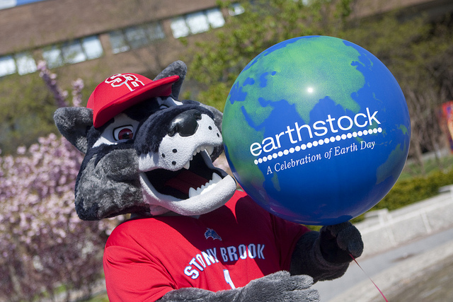

As an exciting start to the spring semester, the Student Activities Center (SAC) collaborates with various campus departments to plan a full schedule of social, athletic and academic events that begins with Opening Activities in January and lasts through February. Activities have traditionally included First Night Out, Winter Barbecue, Bingo for Books, Scooping out Success, Men’s and Women’s Basketball games, Open Mic Nights, RHA Superbowl Extravaganza, Involvement Fair, Ski and Snowboarding Trips, and much more. A complete calendar of activities is updated and posted annually on the SBU website.
The Annual URECA Celebration in April showcases the research and creative talents of all of our students. Faculty, staff, students, and the local community come out to see just how special our students are. It is a day of learning, excitement, interaction, and good food.
Celebrated in late April on or around Earth Day, this day features exhibits, displays, lectures, and concerts to promote and support environment-friendly living. Although Earth Day celebrations have been in existence for a number of years, it was officially named Earthstock in 2004.

Just imagine strawberries all along the academic mall: strawberry shortcake, strawberry crepes, chocolate covered strawberries, and just plain strawberries! Students, faculty and staff come out in the hundreds to enjoy this fun-filled day in the sun. This event has been traditionally held on the last Wednesday in the month of April during Campus Life Time, and includes entertaining music and dance performances.
Diversity Day was the brainchild of the President’s Student Advisory Council, conceived as a way to bring individuals of different backgrounds together for a day of celebration and togetherness. The campus celebrates its diversity every Spring semester during Strawberry Festival, promoting and celebrating our strengths and our differences. Diversity Day is a time to celebrate the many dimensions of difference including culture, religion, age, sexual orientation and nationality.
Get Ready! Set! Go! This is what you’ll hear at the Roth Pond Regatta, while makeshift boats race across the pond for first place. The craziest part of this event is that you’ll see boats unlike any you’ve ever seen before—and with good reason. The boats for the regatta must be made of only cardboard and duct tape. Many faculty and staff also participate in this event, and spectators are quite amused at the sight of professors’ boats sinking into the water as they doggy paddle to land. The Roth Yacht Club names an admiral, a vice admiral, an honorary commodore and various other nautical appointments to preside over the event.
This event is a tradition held on the last Friday of April. Started in the year 1987, the Roth Pond Regatta is a day of fun and excitement even featured on many popular television networks. There is a barbecue and great entertainment throughout the day.
Stony Brook students display their creativity, talent, and diversity at the Shirley Strum Kenny Student Arts Festival. A week-long schedule of events includes ongoing exhibits of undergraduate student research, student artwork, dance and musical performances, film presentations, the annual Student Talent Showcase, and the culminating celebration.
What better way to celebrate your accomplishments as a Stony Brook student than joining together with friends, faculty, staff, and alumni to receive your class ring! Then, eat and drink to all you have come to learn and enjoy at Stony Brook University. The Ring Ceremony began as a new tradition in 2006. Held in March or early April, the event invites Juniors to share in a ceremony that bonds all Stony Brook students past and present with a class ring, all designed with a common look and feel.